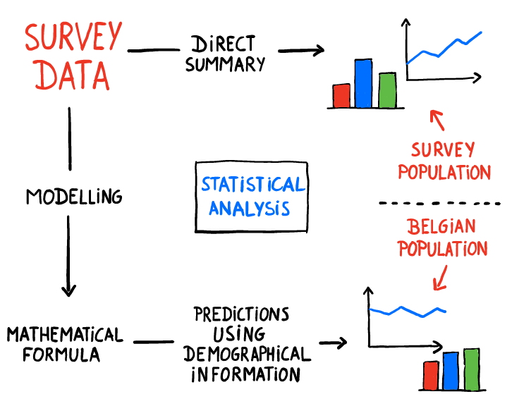

Thank you for your participation in the Corona Study!
The Corona study is an initiative of UAntwerpen, in collaboration with UHasselt and KU Leuven.
1747729 surveys were filled over 5 rounds.
In this study, we have investigated:
- thee spread of COVID-19 symptoms;
- adherence to social distancing measures;
- the socio-economic impact of these measures.
We now want to share these results with you!
Assistance for interpreting the graphs on this webpage
Two types of results were used to construct these graphs:

1. direct statistics (symbool: )
These graphs show direct summaries of the answers to the questions posed in the survey study.
As a result these graphs are representative for group of people who participated, and not the general Belgian population.
For example, women and young people are among those who mostly fill in our survey and are therefore better represented in these direct statistics.
2. model predictions (symbool: )
These results were obtained by analysing the data and correcting the overrepresentation of certain groups in the population.
At the bottom left of each figure, you'll find a question mark button. Press this button if you want more information when viewing a figure.
More information about the Corona study
More information about this website